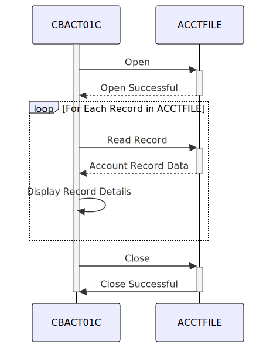

Gerado em: 1º de outubro de 2024
Título do Documento: CardDemo Application - Especificação do Programa de Processamento em Lote de Dados de Conta
Descrição Resumida:
Este documento descreve as especificações técnicas para o programa CBACT01C, uma aplicação de processamento em lote COBOL projetada para ler, validar e exibir dados de contas de cartão de crédito de um arquivo VSAM KSDS. O programa processa sequencialmente os registros da conta, realiza verificações de validação de dados e envia a informação processada para a tela.
Histórias do Usuário:
Como analista de dados, preciso de um programa que possa ler e exibir informações de contas de cartão de crédito de um arquivo seguro para que eu possa verificar a precisão e integridade dos dados.
Epic Relacionado: 7 - Processamento em Lote
Requisitos Técnicos:
Manipulação de Arquivos:
ACCTFILE.FD-ACCT-ID.Validação de Dados:
ACCTFILE usando a variável ACCTFILE-STATUS.00 (sucesso), o programa exibe uma mensagem de erro e é finalizado anormalmente.Processamento de Dados:
ACCOUNT-RECORD.Tratamento de Erros:
ACCTFILE-STATUS para verificar se há erros durante as operações do arquivo.9999-ABEND-PROGRAM) para finalizar o programa anormalmente em caso de erros graves.Saída:
Modelos Relacionados
ACCOUNT-RECORD: Representa um único registro no arquivo ACCTFILE.
ACCT-ID (PIC 9(11)): Identificador da conta.ACCT-ACTIVE-STATUS: Status da conta (por exemplo, ativa, encerrada).ACCT-CURR-BAL: Saldo atual da conta.ACCT-CREDIT-LIMIT: Limite de crédito da conta.ACCT-CASH-CREDIT-LIMIT: Limite de crédito em dinheiro da conta.ACCT-OPEN-DATE: Data de abertura da conta.ACCT-EXPIRAION-DATE: Data de expiração da conta.ACCT-REISSUE-DATE: Data da última reemissão da conta.ACCT-CURR-CYC-CREDIT: Crédito do ciclo atual.ACCT-CURR-CYC-DEBIT: Débito do ciclo atual.ACCT-GROUP-ID: Identificador do grupo da conta.Configurações:
ACCTFILE: Esta configuração especifica os detalhes do arquivo de dados da conta, incluindo seu nome, caminho e layout de registro.
ASSIGN TO: ACCTFILEORGANIZATION IS: INDEXEDACCESS MODE IS: SEQUENTIALRECORD KEY IS: FD-ACCT-IDMelhorias de Código:
Melhorias de Segurança:
ACCTFILE para evitar acesso não autorizado e possíveis violações de dados. Isso pode envolver o uso de permissões do sistema de arquivos ou um software de segurança para restringir o acesso apenas ao pessoal autorizado.ACCTFILE, especialmente se ele contiver informações de identificação pessoal (PII) ou dados financeiros. A criptografia pode ser aplicada no nível do arquivo ou do campo.ACCTFILE. Este log deve registrar o ID do usuário, a data e hora e as ações específicas executadas no arquivo, que podem ser usadas para auditoria de segurança e fins de conformidade.Diagrama Conceitual:
–Made by “Smart Engineering” (by Compass.UOL)–